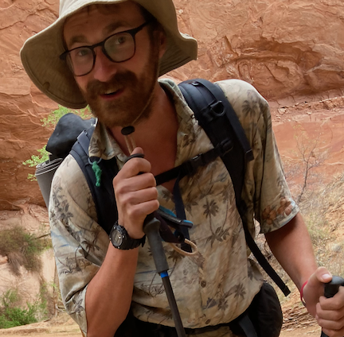

Welcome! I'm Lewis

I'm an ecosystem ecologist and Earth scientist using satellite remote sensing to study the carbon sink of North American forests. I am a Postdoctoral researcher at the University of Utah, where I recently received my PhD supported by NASA FINESST and NSF graduate research fellowships.
I use a combination of geospatial statistics and high-performance computing to answer big questions about land-atmosphere processes, such as "what is the impact of tree mortality on the terrestrial carbon sink?", "how does drought impact the spectral reflectance of forest canopies?", and "what climatic drivers shape the patterns of photosynthesis in forests?".
Before shifting my focus to forest ecosystem monitoring, I developed Bayesian inverse models for optimizing trace gas inventories through collaborations with the CarbonTracker-Lagrange team at NOAA. I also worked as an air quality consultant, supporting air pollution modeling and permitting in Utah and California.
Check out my research projects, visit my github, or browse through photos from some of the cool long-distance hikes that I've been fortunate to complete.